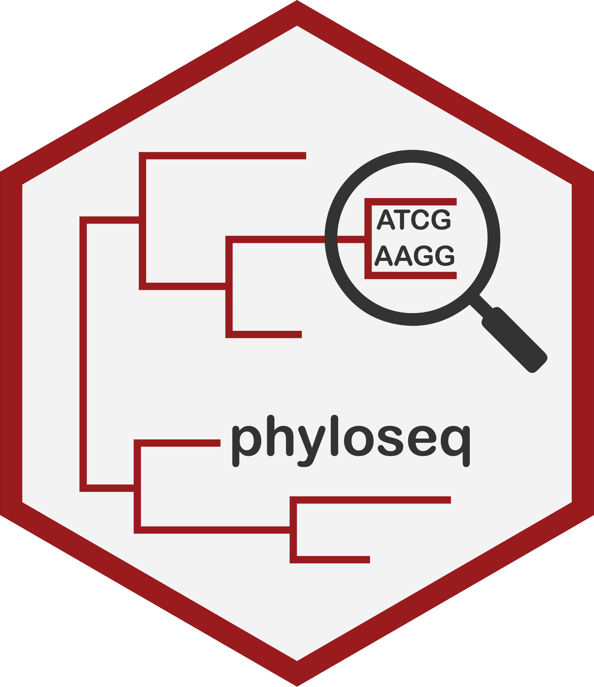
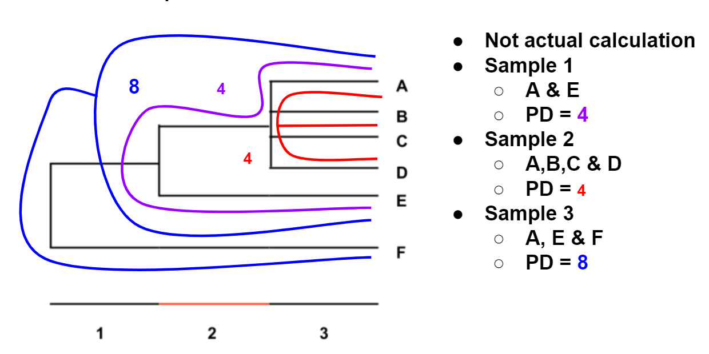

A Mamba installs

A.1 Mamba installation and environment
Mamba is a reimplementation of conda. It is a great tool for installing bioinformatic packages including R packages.
Mamba github: https://github.com/mamba-org/mamba
Mamba installation: https://github.com/conda-forge/miniforge#mambaforge
Mamba guide: https://mamba.readthedocs.io/en/latest/user_guide/mamba.html
To create the mamba environment r_community run the below commands in your bash. You will need to have installed mamba first.
#R community
mamba create -n r_community
mamba activate r_community
mamba install -c bioconda bioconductor-microbiome
mamba install -c r r-tidyverse
mamba install -c conda-forge r-devtools
mamba install -c conda-forge r-ggforce
mamba install -c bioconda bioconductor-ancombc
#Update r-htmltools as loading devtools doesn’t work in R (from 0.5.2 -> 0.5.4)
mamba install -c conda-forge r-htmltools=0.5.4
#If using jupyter-notebook, need to install r kernel for it
mamba install -c conda-forge r-irkernelActivate the environment in bash.
Activate your mamba's R and install Qiime2R.
A.2 Jupyter-notebook

If you are running this on your own computer you can use RStudio.
However, you can also use Jupyter-notebook if you are using an HPC or prefer it.
If using bash you will need to create an environment with Jupyter-notebook.
Ensure you are in the (base) mamba environment.
To run Jupyter-notebook with your r_community environment you can run the following.
B R packages
B.1 ggplot2
Below are some useful resource if you would like to learn ggplot2.
The R Graphics Cookbook is a good place to start. It contains a section called Understanding ggplot2 in its appendix which is useful for learning some key terminologies and concepts.
ggplot2 requires its input to be in long format. You will therefore need to know how to convert your wide data to long data.
B.2 Phyloseq

Below are various resources if you would like to learn more about phyloseq and associated packages.
- Phyloseq: The original
phyloseq. The R object is still great but the included tutorials and some functions are a bit outdated. - microbiome: A supplemental package to
phyloseq. It contains some much needed functions. The tutorials are much clearer than thephyloseqtutorials but still not always the clearest.
B.3 Importing into phyloseq
- QIIME2R: A very useful package to import QIIME2 artifacts into a
phyloseqobject. - Phyloseqize R data: A tutorial on how to import data frames into a
phyloseqobject. - Shotgun metagenomics data
- You can import Kraken2 data by converting the report file to a biom file then importing the biom file into a
phyloseqobject with theQIIME2Rfunctionread_q2biom(). - You can also import the Kraken-Style Bracken report in the above manner.
- The biom format stands for the Biological Observation Matrix (BIOM) format. It is used and created by a variety of tools.
- You can import Kraken2 data by converting the report file to a biom file then importing the biom file into a
C Diversity metrics

C.1 Alpha diversity

Alpha diversity measures assess the diversity of each sample separately. Generally a higher value of these indexes/measures indicates higher diversity/evenness.
C.1.1 Observed features
The observed number of features is defined as the number of distinct features, such as ASVs, within a sample.
The number of observed features can also be known as the feature richness of a sample. A sample with more present features than another would be said to be richer.
C.1.2 Chao
This is an estimation of the actual number of features within a sample.
Equation: \[ C = O + \frac{f1(f1-1)} {2(f2 + 1)} \]
- C = Chao1 estimator, i.e. estimated total feature richness.
- O = Observed number of features.
- f1 = Frequency of singletons (features with total abundance of 1).
- f2 = Frequency of doubletons (features with total abundance of 2).
C.1.3 Evenness
How evenly spread the abundances are across all present features.
- A sample with 4 ASVs, each with 25% relative abundance would be perfectly even.
- A sample with 4 ASVs, where one ASV has 97% abundance and the other 3 have 1%, would be highly uneven.
C.1.4 Faith's PD (phylogenetic diversity)
Faith's PD represents the minimum total branch length that covers all taxa within the sample on a phylogenetic tree (Faith, 1992). A smaller PD value indicates a reduced expected taxonomic diversity whilst a large PD value indicates a higher expected diversity.
A sample with 10 ASVs could have a lower Faith's PD than a sample with only 2 ASVs. This could occur if the 10 ASV sample only has ASVs from one genus whilst the 2 ASV samples consists of ASVs from 2 different Families.

C.1.5 Simpson
A measure of diversity based on number of features present and the relative abundance of each feature. If richness and evenness increase the diversity score increases.
Equation: \[ D = 1 - {( \frac {\sum n{(n-1)}} {N{(N-1)}} )} \]
- D = Simpson diversity index
- n = Abundance of feature
- N = Total feature abundance of sample
The values range from 0 (no diversity) to 1 (infinite diversity).
C.1.6 Simpson evenness measure (simpson_e)
This is a measure of evenness based on the Simpson index. It ranges from 0 (lowest eveness) to 1 (complete evenness). It compares the calculated Simpson Index of a sample to its theoretical maximum if the sample was perfectly even but had the same amount of features.
Equation: \[ E_D = \frac{D} {D_m} \]
- ED = Simpson evenness measure
- D = Simpson diversity index
- Dm = Max possible Simpson diveristy index given the number of features
C.1.7 Shannon
A measure of diversity where a higher number means higher diversity. Shannon's index accounts for both abundance and evenness of the feaures present.
Equation:
\[ H = -\sum_{i=1}^{n} p_i lnp_i \]
- H = Shannon diversity index
- p = n/N
- n = Abundance of feature
- N = Total feature abundance of sample
C.2 Beta diversity

Beta diversity compares 2 samples at a time. This is measured in terms of dissimilarity:
- A lower score indicate the 2 samples are more similar.
- A higher score indicates the 2 samples are more dissimilar.
C.2.1 Weighted and unweighted UniFrac distances
The UniFrac metric is a phylogenetic distance measure between two samples. It is defined as “the sum of the unshared branch lengths between two samples divided by the total branch length (shared + unshared) of two samples” (Lozupone and Knight, 2005). This results in calculating the fraction of the branch lengths unique to each sample (ie. the higher this value is, the more dissimilar two samples are). The entire phylogenetic tree created for all the sequences of all the analysed samples is used for this calculation.
- Unweighted UniFrac: Only considers feature presence/absence.
- Weighted UniFrac: Takes into account feature presence/absence & abundance. I.e. the value is weighted by the abundances.
C.2.2 Bray-Curtis
The Bray-Curtis metric is a dissimilarity measure that can quantify the level of difference between two samples. Two identical samples would have a Bray-Curtis measure of 0 (i.e. they have 0 dissimilarity).
There are 2 versions but the one used by QIIME2 looks at the number of features shared by the 2 samples.
Equation:
\[ CBC = 1 – (\frac{2c} {a + b}) \]
- c = # features present in both samples
- a = # features present in sample a
- b = # features present in sample b
C.3 Diversity Resources
For more diveristy measure please see: https://forum.qiime2.org/t/alpha-and-beta-diversity-explanations-and-commands/2282